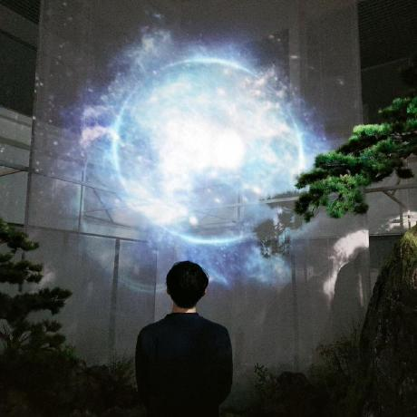

About Me
Hi there! I am a software developer based in South Korea, dedicated to building high-quality web applications that solve real-world problems. My journey in tech started with a curiosity for how things work under the hood, and it has evolved into a professional career characterized by continuous learning and innovation.
I specialize in full-stack development, with a strong focus on modern JavaScript frameworks, CSS architecture, and user experience design. One of my proudest projects is Worship Presenter, a specialized tool for religious services that helps users manage lyrics and media with ease.